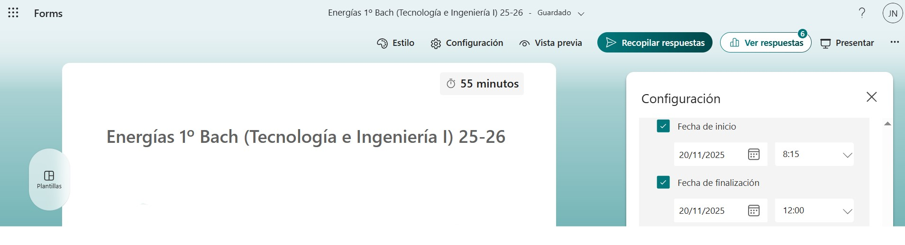

Prueba objetiva
La última sesión de la SdA (sesión 16) consiste en realizar una prueba de evaluación de todos los conceptos trabajados en las distintas tareas.
Se trata de un examen en Forms con 28 preguntas tipo test con respuesta única: 23 son de teoría y 5 ejercicios prácticos. PAra que cada uno de estos ejercicios sea calificado correctamente el estudiante debe desarrollarlos en unas hojas en blanco proporcionadas al inicio de la sesión.
Metodología y Recursos materiales: Será llevado a cabo por los alumnos de forma individual y autónoma en el aula de ordenadores. Cada estudiante podrá disponer del formulario de elaboración propia durante la tarea 1 de esta SdA.
Fecha: 20/11/2025

Con el examen se están trabajando los siguientes criterios de evaluación y sus correspondientes competencias específicas de la legislación actual:
Competencia Específica 3. Utilizar las herramientas digitales adecuadas, analizando sus posibilidades, configurándolas de acuerdo a sus necesidades y aplicando conocimientos interdisciplinares, para resolver tareas, así como para realizar la presentación de los resultados de una manera óptima
3.1. Resolver tareas propuestas y funciones asignadas, mediante el uso y configuración de diferentes herramientas digitales de manera óptima y autónoma.
Competencia específica 6. Analizar y comprender sistemas tecnológicos de los distintos ámbitos de la ingeniería, estudiando sus características, consumo y eficiencia energética, para evaluar el uso responsable y sostenible que se hace de la tecnología.
6.1. Evaluar los distintos sistemas de generación de energía eléctrica y mercados energéticos, estudiando sus características, calculando sus magnitudes y valorando su eficiencia.
Además, se trabajan las siguientes competencias clave: Competencia matemática y en ciencia, tecnología e ingeniería, Competencia Digital y Competencia en conciencia y expresiones culturales.